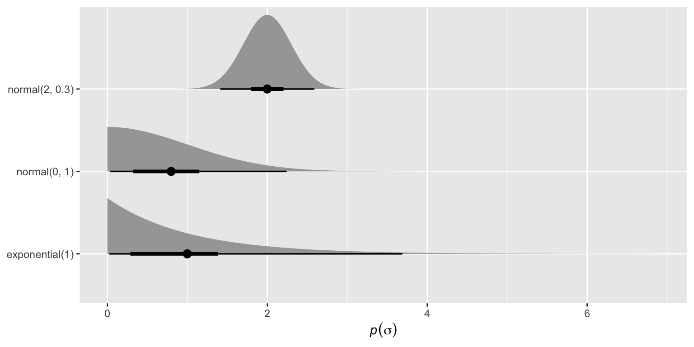
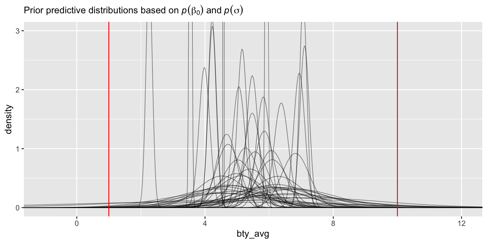
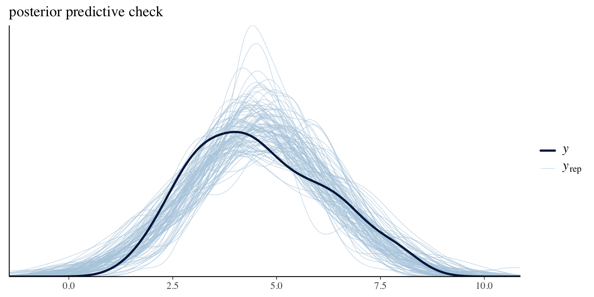
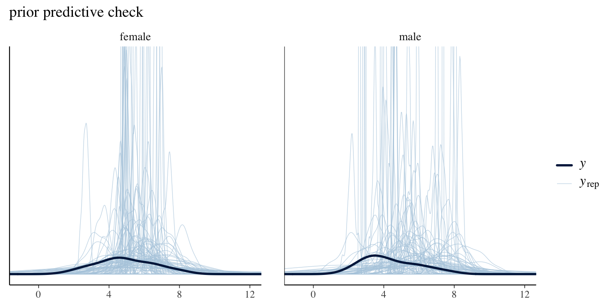

Code
library(tidyverse)
library(brms)
library(tidybayes)
# library(truncnorm) # if needed
During the first Bayes Lab you considered exploratory data analysis, compared default brms with lm(), and extracted posteriors after fitting models. You summarized posterior distributions and also generated a distribution of predictions using these posterior draws.
During the second Bayes lab, you looked at the different types of distributions that are relevant for Bayesian analysis, including priors.
During today’s lab, you will go into prior predictive checks and some HMC diagnostics. While we look at the simple linear modeling case, this workflow is relevant for all Bayesian models.
Load the primary packages.
library(tidyverse)
library(brms)
library(tidybayes)
# library(truncnorm) # if neededThis time we’ll be taking data from the moderndive package. We want the evals data set.
data(evals, package = "moderndive")The evals data were originally in the paper by Hamermesh and Parker (2005; https://doi.org/10.1016/j.econedurev.2004.07.013). You can learn more about the data like this:
?moderndive::evalsYou can learn even more information about the data from https://www.openintro.org/data/index.php?data=evals.
Anyway, we need to subset the data.
evals94 <- evals %>%
group_by(prof_ID) %>%
slice(1) %>%
ungroup()
glimpse(evals94)Rows: 94
Columns: 14
$ ID <int> 1, 5, 8, 10, 18, 24, 31, 36, 43, 50, 60, 63, 68, 75, 79, …
$ prof_ID <int> 1, 2, 3, 4, 5, 6, 7, 8, 9, 10, 11, 12, 13, 14, 15, 16, 17…
$ score <dbl> 4.7, 4.6, 4.1, 4.5, 4.8, 4.4, 4.4, 3.4, 4.8, 4.0, 3.6, 4.…
$ age <int> 36, 59, 51, 40, 31, 62, 33, 51, 33, 47, 35, 37, 42, 49, 3…
$ bty_avg <dbl> 5.000, 3.000, 3.333, 3.167, 7.333, 5.500, 4.167, 4.000, 4…
$ gender <fct> female, male, male, female, female, male, female, female,…
$ ethnicity <fct> minority, not minority, not minority, not minority, not m…
$ language <fct> english, english, english, english, english, english, eng…
$ rank <fct> tenure track, tenured, tenured, tenured, tenure track, te…
$ pic_outfit <fct> not formal, not formal, not formal, not formal, not forma…
$ pic_color <fct> color, color, color, color, color, color, color, color, c…
$ cls_did_eval <int> 24, 17, 55, 40, 42, 182, 33, 25, 48, 16, 18, 30, 28, 30, …
$ cls_students <int> 43, 20, 55, 46, 48, 282, 41, 41, 60, 19, 25, 34, 40, 36, …
$ cls_level <fct> upper, upper, upper, upper, upper, upper, upper, upper, u…Let’s start by fitting an intercept-only model
\[ \begin{align} \text{bty\_avg}_i & \sim \operatorname{Normal}(\mu_i, \sigma) \\ \mu_i & = \beta_0 \\ \beta_0 & \sim \text{???} \\ \sigma & \sim \text{???}, \end{align} \]
where \(\beta_0\) is the same as the unconditional population mean, and the population standard deviation is \(\sigma\). Our next task will be choosing our priors.
Because here \(\beta_0\) and \(\sigma\) are disributions, and we don’t have a chosen prior distribution for them just yet.
In this exercise, we’ll choose the priors together. Let’s start with prior on \(\beta_0\). Below are a few candidate distributions visualized with ggdist and friends.
c(
prior(normal(5.5, 1)),
prior(normal(8, 2)),
prior(normal(5.5, 2))
) %>%
parse_dist() %>%
ggplot(aes(xdist = .dist_obj, y = prior)) +
stat_halfeye(point_interval = mean_qi, .width = c(.5, .95)) +
geom_vline(xintercept = c(1, 10), color = "red") +
labs(subtitle = "The red lines mark the lower and upper boundaries.",
x = expression(italic(p)(beta[0])),
y = NULL)The red lines in the figures (shown at x=1 and x=10) represent the lower and upper boundaries for the beauty ratings scale used in the study. With the simple intercept model, setting a prior on the intercept parameter is the same as setting a prior on the expected mean in observation space.
Now let’s visualize a few potential priors for \(\sigma\).
c(
prior(exponential(1)),
prior(normal(0, 1), lb = 0),
prior(normal(2, 0.3), lb = 0)
) %>%
parse_dist() %>%
ggplot(aes(xdist = .dist_obj, y = prior)) +
stat_halfeye(point_interval = mean_qi, .width = c(.5, .95)) +
xlab(expression(italic(p)(sigma))) +
ylab(NULL)
Yes, they should all be theoretically possible, since we only need \(\sigma\) to be bigger than 0, and all three priors satisfy that.
A theoretically impossible prior would be a normal distribution with mean 0 and standard deviation 1, but not having a left bound and cutoff at 0.
Note: It’s possible we’ll need the truncnorm::rtruncnorm() function in this section. Once we have candidate priors for both \(\beta_0\) and \(\sigma\), we can simulate values from those priors and plot the implied distributions.
# how many distributions do you want?
n <- 50
# do you want to make the simulation reproducible?
# set.seed(1)
# simulate values from the priors
tibble(iter = 1:n,
# choose the hyperparameter values with the class
beta0 = rnorm(n = n, mean = 5.5, sd = 1),
sigma = rexp(n = n, rate = 1 / 1)) %>%
expand_grid(bty_avg = seq(from = -2, to = 13, by = 0.025)) %>%
mutate(density = dnorm(x = bty_avg, mean = beta0, sd = sigma)) %>%
# plot!
ggplot(aes(x = bty_avg, y = density, group = iter)) +
geom_line(linewidth = 1/3, alpha = 1/2) +
geom_vline(xintercept = c(1, 10), color = "red") +
coord_cartesian(xlim = c(-1, 12),
ylim = c(0, 3)) +
labs(subtitle = expression("Prior predictive distributions based on "*italic(p)(beta[0])~and~italic(p)(sigma)))
The simulated values constitute predictions that are made using our prior beliefs (a prior is set for beta0 and another for sigma) When you check if these predictions (prior predictive) make sense or not, it is called the prior predictive check. The point of the prior predictive check is to iterate on specifying the priors until the prior predictive is sensible/satisfactory.
(Again, the red boundaries denote that the only possible bty_avg values are between 1 and 10.)
The code first sets the number of draws to 50. Then creates a tibble with 50 rows, where each row is a simulated \(\beta\) and \(\sigma\). Then we attach a column bty_avg that ranges from –2 to 13 with step 0.025 for every draw, making the tibble 30,050 rows. Then for each bty_avg value, we calculate the density of the normal distribution given each \(\beta\) and \(\sigma\). Then we plot the 50 density plots for the 50 distributions.
# how many distributions do you want?
n <- 50
# do you want to make the simulation reproducible?
# set.seed(1)
# simulate values from the priors
tibble(iter = 1:n,
# choose the hyperparameter values with the class
beta0 = rnorm(n = n, mean = 8, sd = 2),
sigma = rnorm(n = n, mean = 2, sd = 0.3)) %>%
expand_grid(bty_avg = seq(from = -2, to = 13, by = 0.025)) %>%
mutate(density = dnorm(x = bty_avg, mean = beta0, sd = sigma)) %>%
# plot!
ggplot(aes(x = bty_avg, y = density, group = iter)) +
geom_line(linewidth = 1/3, alpha = 1/2) +
geom_vline(xintercept = c(1, 10), color = "red") +
coord_cartesian(xlim = c(-1, 12),
ylim = c(0, 3)) +
labs(subtitle = expression("Prior predictive distributions based on "*italic(p)(beta[0])~and~italic(p)(sigma)))library(truncnorm)
# how many distributions do you want?
n <- 50
# do you want to make the simulation reproducible?
# set.seed(1)
# simulate values from the priors
tibble(iter = 1:n,
# choose the hyperparameter values with the class
beta0 = rnorm(n = n, mean = 5.5, sd = 2),
sigma = rtruncnorm(n = n, a = 0, mean = 0, sd = 1)) %>%
expand_grid(bty_avg = seq(from = -2, to = 13, by = 0.025)) %>%
mutate(density = dnorm(x = bty_avg, mean = beta0, sd = sigma)) %>%
# plot!
ggplot(aes(x = bty_avg, y = density, group = iter)) +
geom_line(linewidth = 1/3, alpha = 1/2) +
geom_vline(xintercept = c(1, 10), color = "red") +
coord_cartesian(xlim = c(-1, 12),
ylim = c(0, 3)) +
labs(subtitle = expression("Prior predictive distributions based on "*italic(p)(beta[0])~and~italic(p)(sigma)))The \(\beta_0\) prior centered at 8 with the \(\sigma\) prior centered at 2 has a much wider density plot. I don’t like how it’s centered around 8 though. I also tried a third one, where the \(\beta_0\) prior is centered at 5.5 with an sd of 2, and the \(\sigma\) prior is a truncated normal distribution of mean 0 and sd 1. I think I would prefer the first one, since all the density plots are within the lower and upper boundaries.
We should practice writing out our model equation with our priors of choice:
\[ \begin{align} \text{bty\_avg}_i & \sim \operatorname{Normal}(\mu_i, \sigma) \\ \mu_i & = \beta_0 \\ \beta_0 & \sim \text{Normal}(5.5,\,1) \\ \sigma & \sim \text{Exponential}(1). \end{align} \]
Let’s fit a model with our priors of choice.
fit9.b = brm(
data = evals94,
family = gaussian,
bty_avg ~ 1,
# make sure we're settled on our priors
# we don't need to use these; they're placeholders
prior = prior(normal(5.5, 1), class = Intercept) +
prior(exponential(1), class = sigma)
)Check the model summary.
summary(fit9.b) Family: gaussian
Links: mu = identity; sigma = identity
Formula: bty_avg ~ 1
Data: evals94 (Number of observations: 94)
Draws: 4 chains, each with iter = 2000; warmup = 1000; thin = 1;
total post-warmup draws = 4000
Regression Coefficients:
Estimate Est.Error l-95% CI u-95% CI Rhat Bulk_ESS Tail_ESS
Intercept 4.62 0.17 4.30 4.95 1.00 3636 2922
Further Distributional Parameters:
Estimate Est.Error l-95% CI u-95% CI Rhat Bulk_ESS Tail_ESS
sigma 1.60 0.12 1.39 1.84 1.00 3769 2947
Draws were sampled using sampling(NUTS). For each parameter, Bulk_ESS
and Tail_ESS are effective sample size measures, and Rhat is the potential
scale reduction factor on split chains (at convergence, Rhat = 1).Now we might do a posterior predictive check to see how well our model describes the data.
set.seed(1)
pp_check(fit9.b, ndraws = 100) +
ggtitle("posterior predictive check")
set.seed(2)
pp_check(fit9.b, ndraws = 8,
type = "hist", binwidth = 0.5) +
# yes, we can add our red lines to our pp-check
geom_vline(xintercept = c(1, 10), color = "red") +
ggtitle("posterior predictive check")Our simple Gaussian model doesn’t do a great job respecting the lower and upper boundaries, but this is about as good as it gets when you’re in Gaussian land. On the whole, the model did a pretty okay reproducing the gross features of the distribution of the sample data.
The prior predictive check draws from the prior distributions. It is used to evaluate prior plausibility and can help detect unrealistic priors or unreasonable model behavior early in the modeling process.
The posterior predictive checks draws from the posterior distributions. It is used to check for model fit, as it takes into account both the data and the prior.
sample_prior = "only")We can also sample from the prior predictive distribution from brm() itself. To do so, we use the sample_prior argument, which has the following options:
"no", which is the default, and does not sample from the prior;"yes",, which will sample from both the prior and the posterior; and"only", which will only sample from the prior.Let’s set sample_prior = "only".
# check to see if we want to use other priors
fit10.b = brm(
data = evals94,
family = gaussian,
bty_avg ~ 1,
prior = prior(normal(5.5, 1), class = Intercept) +
prior(exponential(1), class = sigma),
# here's the magic
sample_prior = "only",
# we can set our seed, too!
seed = 1
)Did you notice how we used the seed argument? This makes the results reproducible.
Now the summary() function only returns summaries for the priors, NOT the posterior.
summary(fit10.b) # this summarizes the prior Family: gaussian
Links: mu = identity; sigma = identity
Formula: bty_avg ~ 1
Data: evals94 (Number of observations: 94)
Draws: 4 chains, each with iter = 2000; warmup = 1000; thin = 1;
total post-warmup draws = 4000
Regression Coefficients:
Estimate Est.Error l-95% CI u-95% CI Rhat Bulk_ESS Tail_ESS
Intercept 5.49 1.00 3.49 7.45 1.00 2076 2255
Further Distributional Parameters:
Estimate Est.Error l-95% CI u-95% CI Rhat Bulk_ESS Tail_ESS
sigma 0.98 0.97 0.03 3.50 1.00 2029 1418
Draws were sampled using sampling(NUTS). For each parameter, Bulk_ESS
and Tail_ESS are effective sample size measures, and Rhat is the potential
scale reduction factor on split chains (at convergence, Rhat = 1).The as_draws_df() function also returns draws from the prior.
as_draws_df(fit10.b) %>%
head()# A draws_df: 6 iterations, 1 chains, and 5 variables
b_Intercept sigma Intercept lprior lp__
1 4.2 1.08 4.2 -2.8 -2.7
2 6.1 0.99 6.1 -2.1 -2.1
3 5.8 0.99 5.8 -2.0 -2.0
4 6.2 0.46 6.2 -1.6 -2.4
5 6.2 0.49 6.2 -1.7 -2.4
6 6.0 0.23 6.0 -1.3 -2.8
# ... hidden reserved variables {'.chain', '.iteration', '.draw'}Here’s how we might use that as_draws_df() output to make a similar plot to the one we made before.
# how many distributions do you want?
n <- 50
# do you want to make the results reproducible?
# set.seed(1)
as_draws_df(fit10.b) %>%
# subset
slice_sample(n = n) %>%
expand_grid(bty_avg = seq(from = -2, to = 13, by = 0.025)) %>%
# notice we're defining the mean by b_Intercept
mutate(density = dnorm(x = bty_avg, mean = b_Intercept, sd = sigma)) %>%
ggplot(aes(x = bty_avg, y = density,
# notice we're grouping by .draw
group = .draw)) +
geom_line(linewidth = 1/3, alpha = 1/2) +
geom_vline(xintercept = c(1, 10), color = "red") +
coord_cartesian(xlim = c(-1, 12),
ylim = c(0, 3)) +
labs(subtitle = expression("Prior predictive distributions based on "*italic(p)(beta[0])~and~italic(p)(sigma)))We can also use functions like pp_check() to compare the prior to the sample data.
set.seed(1)
pp_check(fit10.b, ndraws = 100) +
coord_cartesian(xlim = c(-1, 12),
ylim = c(0, 3)) +
ggtitle("prior predictive check")set.seed(2)
pp_check(fit10.b, ndraws = 8,
type = "hist", binwidth = 0.5) +
# yes, we can add our red lines to our pp-check
geom_vline(xintercept = c(1, 10), color = "red") +
ggtitle("prior predictive check")Now we’ll add gender as the sole predictor in the model,
\[ \begin{align} \text{bty_avg}_i & \sim \operatorname{Normal}(\mu_i, \sigma) \\ \mu_i & = \beta_0 + \beta_1 \text{gender}_i \\ \beta_0 & \sim \text{???} \\ \beta_1 & \sim \text{???} \\ \sigma & \sim \text{???}. \end{align} \]
Let’s try these same set of \(\beta_0\) priors
# change as needed
c(
prior(normal(5.5, 1)),
prior(normal(7, 0.5)),
prior(normal(5.5, 2))
) %>%
parse_dist() %>%
ggplot(aes(xdist = .dist_obj, y = prior)) +
stat_halfeye(point_interval = mean_qi, .width = c(.5, .95)) +
geom_vline(xintercept = c(1, 10), color = "red") +
labs(subtitle = "The red lines mark the lower and upper bondaries.",
x = expression(italic(p)(beta[0])),
y = NULL)
Now we update our by-hand prior predictive simulation to accomodate \(\beta_0\) and \(\beta_1\).
n <- 50
set.seed(1)
tibble(iter = 1:n,
beta0 = rnorm(n = n, mean = 5.5, sd = 1),
# notice our new line
beta1 = rnorm(n = n, mean = 0, sd = 1),
sigma = rexp(n = n, rate = 1 / 1)) %>%
# we have a new expand_grid() line
# make sure everyone understands this coding scheme
expand_grid(gendermale = 0:1) %>%
expand_grid(bty_avg = seq(from = -2, to = 13, by = 0.025)) %>%
# notice the updated mean formula
mutate(density = dnorm(x = bty_avg,
mean = beta0 + beta1 * gendermale,
sd = sigma)) %>%
# plot!
ggplot(aes(x = bty_avg, y = density, group = iter)) +
geom_line(linewidth = 1/3, alpha = 1/2) +
geom_vline(xintercept = c(1, 10), color = "red") +
coord_cartesian(xlim = c(-1, 12),
ylim = c(0, 3)) +
labs(subtitle = expression("Prior predictive distributions based on "*italic(p)(beta[0])~ and~italic(p)(beta[1])~and~italic(p)(sigma))) +
facet_wrap(~ gendermale, labeller = label_both)Before we fit the model, let’s practice the sample_prior = "only" approach.
# check to see if we want to use other priors
fit11.b = brm(
data = evals94,
family = gaussian,
# notice the 0 + Intercept syntax
bty_avg ~ 0 + Intercept + gender,
prior = prior(normal(5.5, 1), class = b, coef = Intercept) +
prior(normal(0, 1), class = b, coef = gendermale) +
prior(exponential(1), class = sigma),
# here's the magic
sample_prior = "only",
seed = 2
)Check the prior summary.
summary(fit11.b) Family: gaussian
Links: mu = identity; sigma = identity
Formula: bty_avg ~ 0 + Intercept + gender
Data: evals94 (Number of observations: 94)
Draws: 4 chains, each with iter = 2000; warmup = 1000; thin = 1;
total post-warmup draws = 4000
Regression Coefficients:
Estimate Est.Error l-95% CI u-95% CI Rhat Bulk_ESS Tail_ESS
Intercept 5.49 0.98 3.58 7.40 1.00 3315 2688
gendermale -0.02 1.00 -1.93 1.90 1.00 3354 2634
Further Distributional Parameters:
Estimate Est.Error l-95% CI u-95% CI Rhat Bulk_ESS Tail_ESS
sigma 1.00 1.00 0.03 3.55 1.00 2186 1435
Draws were sampled using sampling(NUTS). For each parameter, Bulk_ESS
and Tail_ESS are effective sample size measures, and Rhat is the potential
scale reduction factor on split chains (at convergence, Rhat = 1).Compare the prior with the data with pp_check().
set.seed(1)
pp_check(fit11.b,
type = "dens_overlay_grouped",
group = "gender",
ndraws = 100) +
coord_cartesian(xlim = c(-1, 12),
ylim = c(0, 3)) +
ggtitle("prior predictive check")
set.seed(2)
pp_check(fit11.b, ndraws = 5,
type = "freqpoly_grouped", group = "gender") +
# yes, we can add our red lines to our pp-check
geom_vline(xintercept = c(1, 10), color = "red") +
ggtitle("prior predictive check")
There isn’t a great grouped histogram option for pp_check(), so we experimented with type = "freqpoly_grouped" instead.
If we wanted, we could also use the predict() function to simulate bty_avg values from the priors.
# walk through this slowly
set.seed(1)
predict(fit11.b,
summary = FALSE,
ndraws = 5) %>%
str() num [1:5, 1:94] 4.1 7.4 2.61 6.32 6.22 ...
- attr(*, "dimnames")=List of 2
..$ : NULL
..$ : NULL# customize the predictor grid, as desired
nd <- tibble(gender = rep(c("female", "male"), each = 50)) %>%
# this will make it easier to connect the nd data to the predict() output
mutate(row = 1:n())
set.seed(1)
predict(fit11.b,
newdata = nd,
summary = FALSE,
ndraws = 5) %>%
data.frame() %>%
mutate(draw = 1:n()) %>%
pivot_longer(-draw) %>%
mutate(row = str_remove(name, "X") %>% as.double()) %>%
left_join(nd, by = "row") %>%
ggplot(aes(x = value)) +
geom_histogram(binwidth = 0.5, boundary = 1) +
geom_vline(xintercept = c(1, 10), color = "red") +
facet_grid(draw ~ gender, labeller = label_both)Once we’ve settled on our priors, we should once again practice writing out the full model equation:
\[ \begin{align} \text{bty_avg}_i & \sim \operatorname{Normal}(\mu_i, \sigma) \\ \mu_i & = \beta_0 + \beta_1 \text{gender}_i \\ \beta_0 & \sim \text{Normal}(5.5,1) \\ \beta_1 & \sim \text{Normal}(0,1) \\ \sigma & \sim \text{Exponential}(1). \end{align} \]
Okay, let’s fit the real model.
# check to see if we want to use other priors
fit12.b = brm(
data = evals94,
family = gaussian,
bty_avg ~ 0 + Intercept + gender,
prior = prior(normal(5.5, 1), class = b, coef = Intercept) +
prior(normal(0, 1), class = b, coef = gendermale) +
prior(exponential(1), class = sigma),
# yes, you can set your seed for your posteriors, too
# this makes the results reproducible
seed = 3
)Check the model summary.
summary(fit12.b) Family: gaussian
Links: mu = identity; sigma = identity
Formula: bty_avg ~ 0 + Intercept + gender
Data: evals94 (Number of observations: 94)
Draws: 4 chains, each with iter = 2000; warmup = 1000; thin = 1;
total post-warmup draws = 4000
Regression Coefficients:
Estimate Est.Error l-95% CI u-95% CI Rhat Bulk_ESS Tail_ESS
Intercept 4.93 0.24 4.46 5.39 1.00 2151 1978
gendermale -0.55 0.31 -1.18 0.06 1.00 2219 2156
Further Distributional Parameters:
Estimate Est.Error l-95% CI u-95% CI Rhat Bulk_ESS Tail_ESS
sigma 1.58 0.12 1.38 1.83 1.00 2709 2289
Draws were sampled using sampling(NUTS). For each parameter, Bulk_ESS
and Tail_ESS are effective sample size measures, and Rhat is the potential
scale reduction factor on split chains (at convergence, Rhat = 1).How does the posterior-predictive check look?
set.seed(1)
pp_check(fit12.b,
type = "dens_overlay_grouped",
group = "gender",
ndraws = 100) +
coord_cartesian(xlim = c(-1, 12)) +
ggtitle("posterior predictive check")set.seed(2)
pp_check(fit12.b, ndraws = 5,
type = "freqpoly_grouped", group = "gender") +
# yes, we can add our red lines to our pp-check
geom_vline(xintercept = c(1, 10), color = "red") +
ggtitle("prior predictive check")The posterior predictive check look alright. The spread of \(y\) for both male and female is quite decently captured by the \(y_{rep}\) draws. However, the model still does not respect the upper and lower boundaries sometimes.
For more on prior predictive checks, see McElreath (from Chapter 4), and Solomon Kurz’s brms/tidverse implementations as well.
For a comprehensive guide to set priors for a given situation, look at reccomendations made by the Stan team https://github.com/stan-dev/stan/wiki/prior-choice-recommendations
They generally recommend against uniform priors on \(\beta\) and \(\sigma\) parameters. This is based on a general principle that you should not use a prior that places an artificial boundary on a parameter.
E.g. \(\sigma\) parameters have natural lower boundaries at zero, but they don’t have upper boundaries. Thus, a uniform prior adds an unnatural upper boundary. A better prior would be something that is weakly informative
Hamermesh, D. S., & Parker, A. (2005). Beauty in the classroom: Instructors’ pulchritude and putative pedagogical productivity. Economics of Education Review, 24(4), 369-376. https://doi.org/10.1016/j.econedurev.2004.07.013
Kurz, A. S. (2023). Statistical Rethinking with brms, ggplot2, and the tidyverse: Second Edition (version 0.4.0). https://bookdown.org/content/4857/
McElreath, R. (2020). Statistical rethinking: A Bayesian course with examples in R and Stan (Second Edition). CRC Press. https://xcelab.net/rm/statistical-rethinking/
sessionInfo()R version 4.4.1 (2024-06-14)
Platform: x86_64-apple-darwin20
Running under: macOS 15.4.1
Matrix products: default
BLAS: /Library/Frameworks/R.framework/Versions/4.4-x86_64/Resources/lib/libRblas.0.dylib
LAPACK: /Library/Frameworks/R.framework/Versions/4.4-x86_64/Resources/lib/libRlapack.dylib; LAPACK version 3.12.0
locale:
[1] en_US.UTF-8/en_US.UTF-8/en_US.UTF-8/C/en_US.UTF-8/en_US.UTF-8
time zone: America/New_York
tzcode source: internal
attached base packages:
[1] stats graphics grDevices datasets utils methods base
other attached packages:
[1] truncnorm_1.0-9 tidybayes_3.0.7 brms_2.22.0 Rcpp_1.0.14
[5] lubridate_1.9.4 forcats_1.0.0 stringr_1.5.1 dplyr_1.1.4
[9] purrr_1.0.4 readr_2.1.5 tidyr_1.3.1 tibble_3.2.1
[13] ggplot2_3.5.2 tidyverse_2.0.0
loaded via a namespace (and not attached):
[1] svUnit_1.0.6 tidyselect_1.2.1 farver_2.1.2
[4] loo_2.8.0 fastmap_1.2.0 tensorA_0.36.2.1
[7] digest_0.6.37 estimability_1.5.1 timechange_0.3.0
[10] lifecycle_1.0.4 StanHeaders_2.32.10 processx_3.8.5
[13] magrittr_2.0.3 posterior_1.6.0 compiler_4.4.1
[16] rlang_1.1.4 tools_4.4.1 yaml_2.3.10
[19] knitr_1.49 labeling_0.4.3 bridgesampling_1.1-2
[22] htmlwidgets_1.6.4 pkgbuild_1.4.6 curl_6.2.0
[25] plyr_1.8.9 abind_1.4-8 withr_3.0.2
[28] numDeriv_2016.8-1.1 grid_4.4.1 stats4_4.4.1
[31] xtable_1.8-4 colorspace_2.1-1 inline_0.3.21
[34] emmeans_1.10.7 scales_1.3.0 cli_3.6.3
[37] mvtnorm_1.3-3 rmarkdown_2.28 generics_0.1.3
[40] RcppParallel_5.1.10 rstudioapi_0.17.1 reshape2_1.4.4
[43] tzdb_0.4.0 rstan_2.32.6 bayesplot_1.11.1
[46] parallel_4.4.1 matrixStats_1.5.0 vctrs_0.6.5
[49] V8_6.0.3 Matrix_1.7-0 jsonlite_1.8.8
[52] callr_3.7.6 hms_1.1.3 arrayhelpers_1.1-0
[55] ggdist_3.3.2 glue_1.8.0 codetools_0.2-20
[58] ps_1.9.0 distributional_0.5.0 stringi_1.8.4
[61] gtable_0.3.6 QuickJSR_1.5.2 munsell_0.5.1
[64] pillar_1.10.1 htmltools_0.5.8.1 Brobdingnag_1.2-9
[67] R6_2.5.1 evaluate_1.0.3 lattice_0.22-6
[70] backports_1.5.0 renv_1.0.7 rstantools_2.4.0
[73] coda_0.19-4.1 gridExtra_2.3 nlme_3.1-164
[76] checkmate_2.3.2 xfun_0.51 pkgconfig_2.0.3